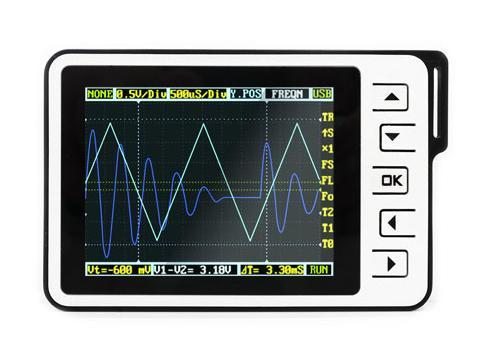

The DSO Nano is a one-channel handheld oscilloscope, suitable for quick field measurements and more. You will find it very simple to use, but it is nonetheless a quite amazing little tool.
Being a new and dynamic open-hardware and open-source project, the information tends to be scattered around quite a bit. This page will try to collect the most relevant information in a single place, in order to help newcomers find their way through the wealth of unorganized material already available.
Click the image to get to different version of DSO Nano.
| DSO Nano v1
Original |
 DSO Nano v2
Discontinued |
DSO Nano v3
On Sale |
So far there have been two major versions of the DSO Nano, the original one in 2009, and the DSO Nano V2 in 2010. (A significant hardware upgrade including dual channels was introduced with the DSO Quad.) Apart from the improved charging unit in V2, and a redesigned PCB, the specifications are pretty much the same. They can use the same firmware.
A photo from inside the V2 was posted to the forum.
| CPU | ARM Cortex™-M3 (STM32F103VBT6) |
| RAM | 20k |
| Flash ROM | 128k |
| Clock frequency | 72MHz |
| Display | 2.8″ Color TFT LCD |
| Display Resolution | 320×240 |
| Display Color | 65K |
| PC connection via USB | as SD card reader |
| Upgrade | by bootloader via USB |
| Power supply | 3.7V Chargeable lithium battery / USB (LTC4054 charger controller) |
The DSO Nano you hold in your hand took some time to reach you; it is more than likely that a newer version of the firmware is already available.
The newest firmware from BenF is available from the Tech Support forum. Inside the ZIP file you will also find the operating manual for this firmware release.
To upgrade the firmware to the latest version, you have a few options:
| Analog bandwidth | 0 - 1MHz |
| Max sample rate | 1Msps 12Bits |
| Sample memory depth | 4096 Point |
| Horizontal sensitivity | 1μS/Div～10S/Div (1-2-5 Step) |
| Horizontal position | adjustable with indicator |
| Vertical sensitivity | 10mV/Div～10V/Div (with ×1 probe) |
| 0.5V/Div～100V/Div (with ×10 probe) | |
| Vertical position | adjustable with indicator |
| Input impedance | >500KΩ |
| Max input voltage | 80Vpp (by ×1 probe) |
| Coupling | DC |
| Trig modes | Auto, Normal, Single, None and Scan |
| Functionalities: | Automatic measurement: frequency, cycle, duty, |
| Vpp, Vram, Vavg and DC voltage | |
| Precise vertical measurement with markers | |
| Precise horizontal measurement with markers | |
| Rising/falling edge trigger | |
| Trig level adjustable with indicator | |
| Trig sensitivity adjustable with indicator | |
| Hold/run feature | |
| Test signal | Built-in 10Hz～1MHz (1-2-5 Step) |
| Waveform storage | SD card |
| PC connection via USB | as SD card reader |